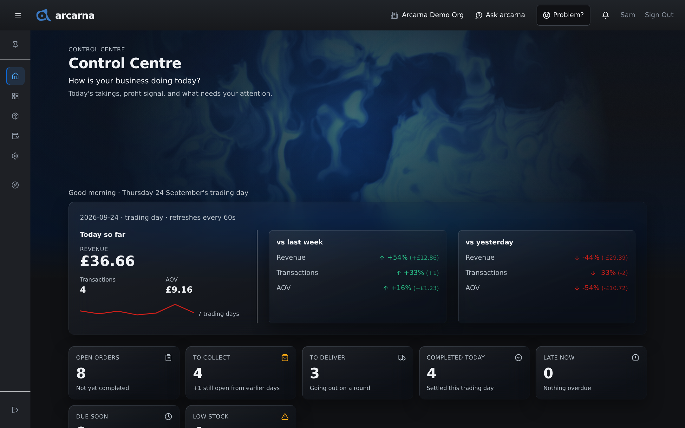
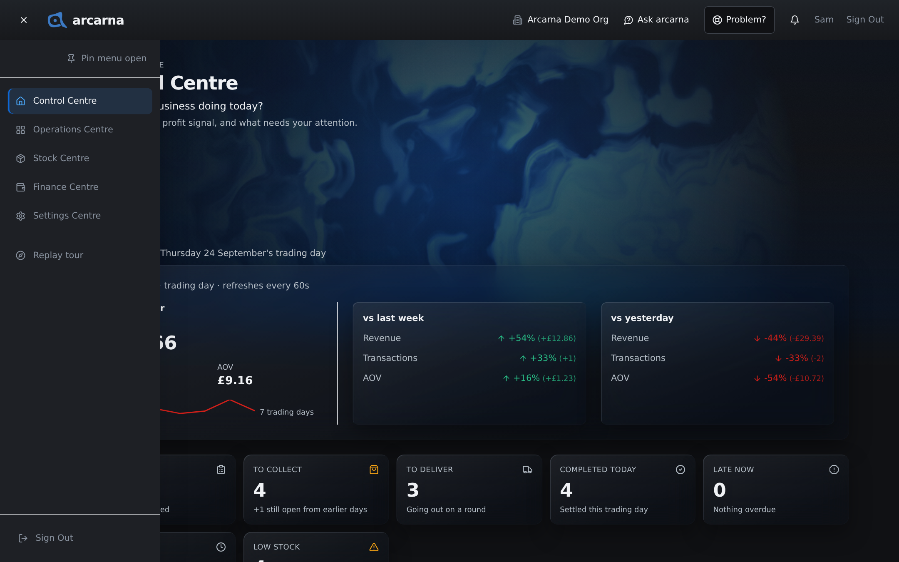
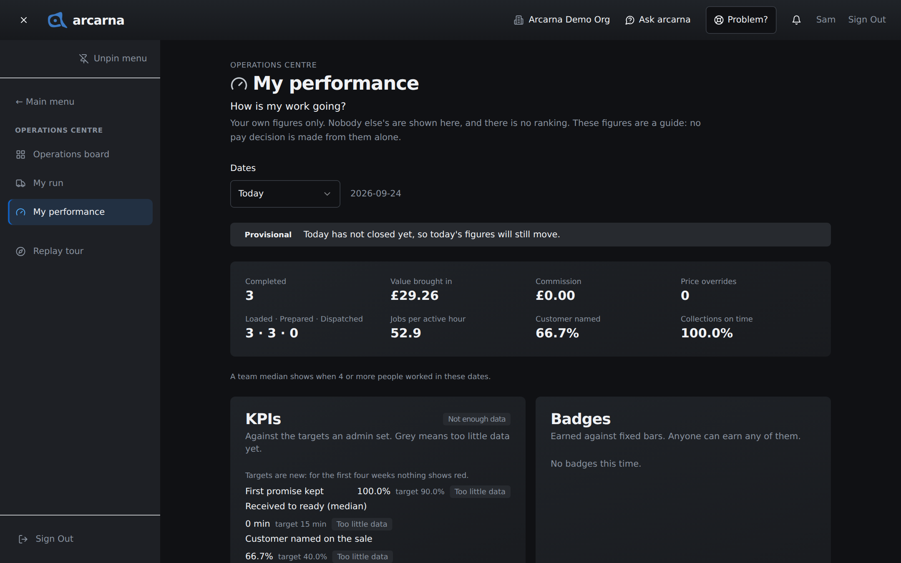
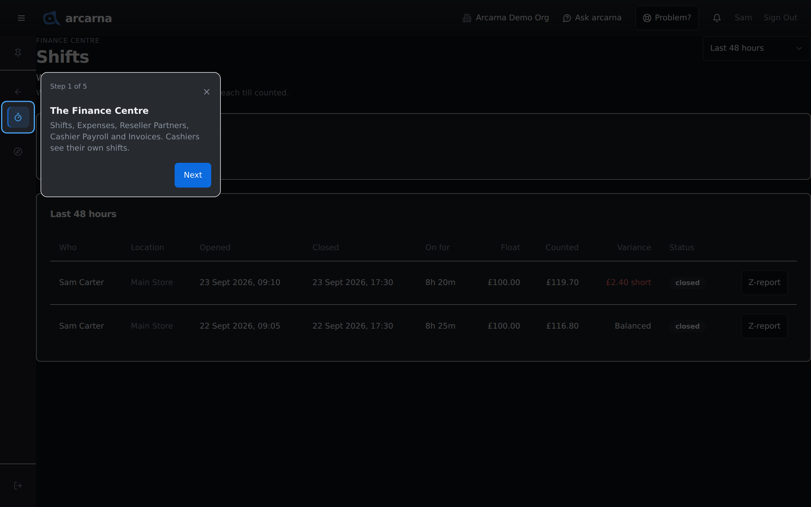
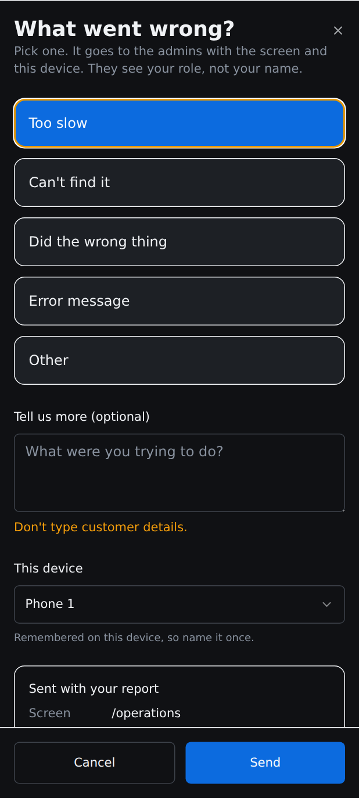

Staff training manual
Staff training manual
Who uses arcarna, how to sign in, and how to find your way: the Centres menu, the page headers, the short tours, and the two buttons that are always there when you need help.
Roles · who does what
One system, several roles
Everyone signs into the same arcarna, but what you see depends on your role. The menu only lists the pages your role can open, so two people standing at the same till can see different menus. That is deliberate, not a fault. Throughout this manual, look for these tags: CASHIER MANAGER
| Role | What they do in arcarna |
|---|---|
| CASHIER | Takes orders and payment on the Operations board, works the board, checks stock levels, and sees their own shifts and their own performance. A cashier never sees cost prices, and sees customers' phone numbers and emails masked (for example ••4821). |
| DRIVER | Not a separate role. Anyone with deliveries assigned to them works them from My run on their phone (Section 5). A cashier account is all a driver needs. |
| MANAGER | Everything a cashier does, plus: products, stock and suppliers, customers, the Credit List and invoices, expenses and cashier pay, the Truths and the Evidence, and reviewing the team's shifts. |
| ADMIN | As a manager, plus: approving new people and setting their roles, locations, business-wide settings, the price guard, and business-wide profit. |
| OWNER | As an admin, plus a few owner-only pages, such as the full log of who looked at customers' contact details. |
Getting in
Signing in
- Open arcarna.viger.cloud in your browser. It works on tills, tablets and phones.
- The page reads Sign in to continue. Enter your email and password on the secure account page.
- First time here? An admin has to approve your account before you can see anything. Until they do, you see an Access pending screen with your name. It checks again by itself every 30 seconds, or you can select Check status. That is normal.
- Once you are approved, you land on the Control Centre, described below.
Signing out
Select Sign Out, at the top right of the screen or at the bottom of the menu. If the till still holds sales it has not sent (because the connection dropped), arcarna shows Sales not sent yet and keeps you signed in until they have gone. That way a sale is never lost when someone signs out. Section 3 explains the offline till.
The top of every screen
The header
The dark strip across the top is the same on every page. From left to right:
| Part | What it does |
|---|---|
| Menu button (three lines) | Opens and closes the menu. On a phone this is the only way to open it. |
| The arcarna mark | Takes you back to the Control Centre from anywhere. |
| Preview as | Admins only. Shows the app as a manager or a cashier would see it. Covered in Section 11. |
| Ask arcarna (speech bubble) | Opens Ask arcarna, where you can ask about the shop's figures in plain English. It only appears once Ask arcarna has been set up for your shop. On narrower screens it is just the icon. See the end of this section and Section 10. |
| Problem? | Tells the admins something went wrong on the screen you are on. See below. On a phone it shows as a lifebuoy icon. |
| Signals (bell) | Messages from arcarna about things that need your attention. Which Signals you receive depends on your role. |
| Your name and Sign Out | Who is signed in on this device, and the way out. |
The home screen
The Control Centre
This is the first screen after signing in. It answers one question: how is your business doing today? It is the only page in the Control Centre, so choosing the Control Centre in the menu always brings you straight here.

What each part means
| Part | What it tells you |
|---|---|
| Today so far | Revenue (money taken so far today) and Transactions (how many orders), compared with last week, with yesterday and with this weekday's 12-month average, so a quiet Tuesday is judged against other Tuesdays. |
| Operations counts | Open orders, To collect, To deliver, Completed today, Late now, Due soon and Low stock. A quick read of how busy the board is. |
| My performance | Your own completed orders, value brought in and commission. Only yours. Section 2 explains it. |
| Recent orders | The latest orders taken. |
| Next moves and The last 7 trading days | What arcarna suggests doing next, and how the past week has gone. |
| Worth a look and Truths overview | Managers and above. A shortlist of Evidence worth opening today, and a fold-out overview of the Truths. |
| Quick actions | Shortcuts to common jobs. Create Order opens the till for everyone. The others lead to pages for managers or admins; a cashier who opens one sees the no-access page described above. |
| Recent activity | A fold-out list of what has happened recently. |
Finding your way · the Centres
The Centres menu
arcarna is arranged into Centres. Each Centre groups the pages for one part of the business. The main menu lists the Centres; choose one and the menu switches to that Centre's pages. You only ever see the Centres, and the pages, that your role can open.
| Centre | What it is for | What a cashier finds there |
|---|---|---|
| Control Centre | Today at a glance. | The Control Centre itself. |
| Operations Centre | Where orders are taken and worked. | Operations board (the till and the order board, Sections 3 and 4), My run (deliveries, Section 5) and My performance (Section 2). |
| Stock Centre | Products and stock. | Stock levels: how many of each product your location has. Read-only, with no cost prices (Section 6). |
| Finance Centre | Money: shifts, pay, expenses and invoices. | Shifts: your own shifts only (Section 2). |
| Settings Centre | How arcarna is set up. | Settings, mostly to read. The jobs a cashier does here are pairing a label printer (Section 4) and naming the device under This device, both on the System tab. |
| Truths Centre | What the figures are telling you, with the Evidence behind them. | Not shown to cashiers. |
| Customer Centre | Customers, loyalty, promotions and gift cards. | Not shown to cashiers. At the till you still find and add customers (Section 3). |
What managers also find MANAGER
| Centre | Extra pages for managers and above |
|---|---|
| Operations Centre | Credit List, Needs attention (till sales the server refused) and Needs a look (sales and refunds to review). |
| Stock Centre | Products, Stock Truths, Purchase Drafts and Suppliers. Managers do not get Stock levels in the menu, because Products and Stock Truths already show it. |
| Truths Centre | Opens on Truths at a glance. Also Evidence, Staff Performance, Staff targets, Order Timing, Customer Truths, Busiest Hours, Order Channels, Stock Turn, Price overrides and Scheduled Evidence. |
| Customer Centre | Customers, Loyalty, Promotions and Gift Cards. |
| Finance Centre | Expenses, Reseller Partners, Cashier Payroll, Staff Performance (the same page as in the Truths Centre) and Invoices. Shifts also lists your cashiers' shifts. |
| Settings Centre | Rules, and the Imports, Cashiers and Operations tabs of Settings. |
What admins and the owner also find
| Who | Extra pages |
|---|---|
| ADMIN | Truths Centre: Profit Truths, Would have flagged and Problem? inbox. Settings Centre: User Access, Locations, Developer, and the Flags tab of Settings. |
| OWNER | Truths Centre: Friction Truths. Settings Centre: Audit Log, Customer data access and System Activity. |
Opening and moving around the menu
How the menu opens depends on the device you are using:
| Device | How the menu behaves |
|---|---|
| Computer (mouse or trackpad) | The menu sits down the left as a narrow strip of icons. Point at it and it slides out over the page; move away and it tucks back half a second later. The page underneath does not move. The menu button and the Escape key also open and close it. |
| Tablet | Tap the menu button at the top left. The menu slides out over the page and puts itself away when you choose a page or tap outside it. |
| Phone | Tap the menu button. The menu slides in from the left, with Sign Out at the bottom. |
- Open the menu. You see the main menu: the list of Centres, with Replay tour beneath.
- Choose a Centre. arcarna opens that Centre's first page and the menu switches to show only that Centre's pages, with the Centre's name above them.
- Choose any page in the list. Pages with tabs, such as Settings, list their tabs underneath.
- To reach another Centre, select ← Main menu at the top of the menu, then choose the Centre you want.
If you open a link to a page directly, the menu follows it and opens on that page's Centre.

Pinning the menu open
On a computer or tablet, Pin menu open at the top of the menu keeps it open beside the page, and the page moves over to make room. Select Unpin menu to go back to the sliding menu. The pin is remembered on that device only, so a pinned till stays pinned for the next person.

Finding your way · page headers
Reading a page header
Most pages open with the same four lines, so you always know where you are and what the page is for:
| Line | What it tells you |
|---|---|
| The small heading | The Centre this page belongs to, for example FINANCE CENTRE. |
| The title | The page's name, the same as in the menu. |
| The question | The question the page answers, for example Who was on, and did the till balance? |
| The explanation | One short line on what the page shows or what to do next. |
Learning as you go
Tours, Replay tour and What's New
arcarna teaches itself in small pieces, the first time you need them.
Centre tours
The first time you reach a page in a Centre, a short tour points out that Centre's menu, ← Main menu, the page header, the pin and Replay tour. The rest of the screen is dimmed and the part being explained is outlined.
- Read the step, then select Next. Back returns to the previous step.
- On the last step, select Got it.
- To stop early, select the cross at the top right of the tour box.
The Operations board has its own tour of the board and the order form. Some newer pages also have a tour of their own, shown the first time you reach them: My run, the label printer card in Settings, and Ask arcarna on My performance, for example.
Each tour is shown once per person, not once per device. Once you have seen it, it will not come back on another till or on your phone.

Replay tour
Replay tour at the bottom of the menu shows a tour again whenever you like. It picks the most useful one for where you are: the tour for a new feature on screen if there is one, the board tour in the Operations Centre, and otherwise the tour for the Centre you are in.
What's New
The first time you sign in after an update, a window titled What's new in v1.2.1 lists what changed. It only lists the changes that matter to your role. Read it, then select Got it. Like the tours, it is shown once per person.
When something goes wrong
The Problem? button
If arcarna is slow, you cannot find something, or it does something unexpected, tell the admins straight away with Problem?. It is in the header on every page, and on the till beside the order. It takes a few seconds, and it sends the screen you were on with it, so you do not have to explain where you were.
- Select Problem?. A full-screen panel asks What went wrong?
- Pick one: Too slow, Can't find it, Did the wrong thing, Error message or Other.
- If you like, add a line under Tell us more (optional), such as what you were trying to do.
- The first time on a device, choose which device it is under This device (for example Till 1 or Phone 2). It is remembered, so you only do this once.
- Select Send. You see Thanks, it's reported.
The box headed Sent with your report shows exactly what goes with it: the screen, your role, the device, the version, whether you were online, and how many sales are waiting to send. Admins see your role, not your name. If the till is offline, the report is kept on the device and sent when the connection returns.

Asking a question
Where Ask arcarna opens
Ask arcarna answers questions about the shop's own figures in plain English, such as "How am I doing this week?". It only answers from figures your role can already see, it never changes anything, and it links to the Evidence it used.
Open it from the speech-bubble icon in the header (labelled Ask arcarna on wide screens). It slides in from the right, over the page you are on, so you do not lose your place. If you cannot see the icon, Ask arcarna has not been set up for your shop. Section 10 explains how to ask good questions.
Managers can also open it with the Ask arcarna button on Truths at a glance, in the Truths Centre.